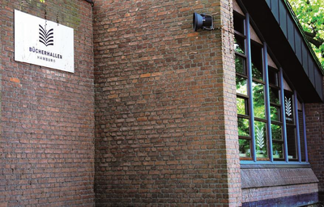

OrganisatorischesDas Süderelbe-Archiv ist eine Kooperation von Kulturhaus-Süderelbe e.V. und Bücherhalle Neugraben.KontaktSie erreichen uns in der Bücherhalle Neugraben, Neugrabener Markt 7, 21149 Hamburg.  Alle Materialien sind während der Öffnungszeiten der Bücherhalle einsehbar, eine Kopiermöglichkeit ist vorhanden.Für die Öffnungszeiten der Bücherhalle klicken Sie bitte hier. Kontaktieren Sie uns gern per E-Mail |